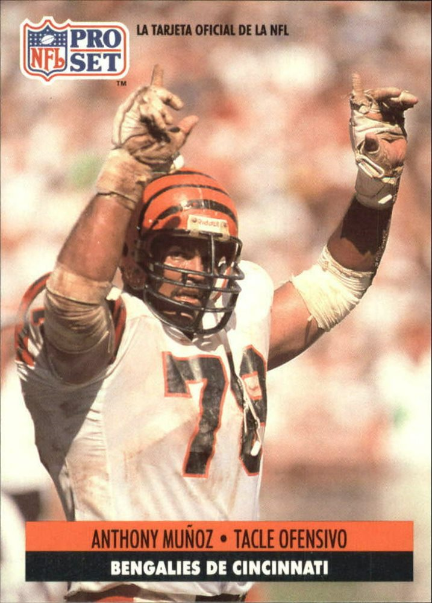
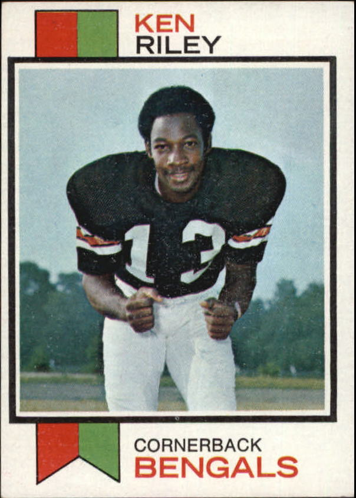
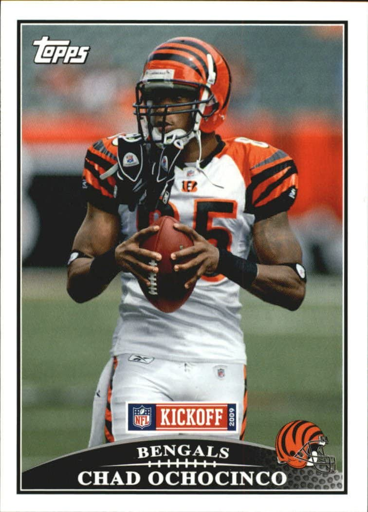
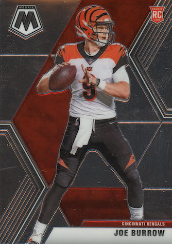
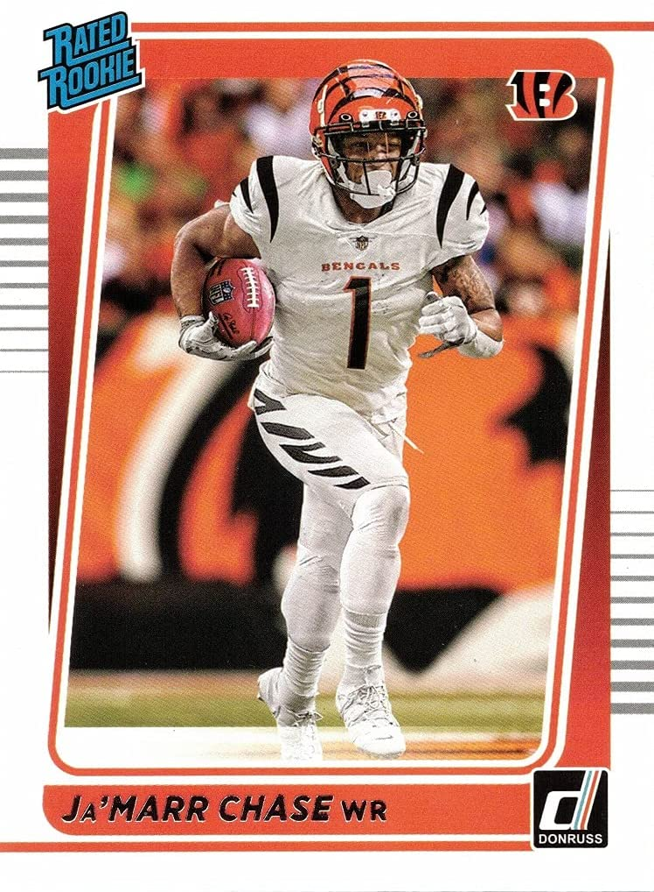
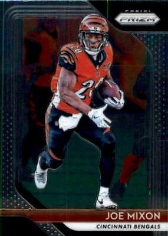

Page Error. Click reload button below to reload.
Best Bengals Players
Players of the Past
Throughout the Bengals history they have had countless standout players. This includes the likes of Ken Riley, Pro Football Hall of Fame inductee Anthony Munoz (pictured below), the infamous Chad Ochocinco, and many, many more. Considered the best bengal player and best offensive tackle of all time, Anthony Munoz (pictured below, left) defined a generation of gritty Bengals football. He helped the Bengals reach two superbowls in the 1980's and locked down any poor defensive lineman who lined up in fornt of him. Ken Riley (pictured elow, middle) was a Bengals cornerback in the 1970's. He was known for his longevity and knack for catching interceptions. Chad Ochocinco (pictured below, right) was an electrifying wide reciever for the Bengals in the 2000's. His wild off the field antics attracted many lifelong fans.
  
Although it is a tough task, my top 3 best Bengals players of all time in order are:
- Anthony Munoz
- Ken Riley
- Chad Ochocinco
Players of the Present
The glory days of the Bengals may appear to be over, but present day the Bengals have many star players. This includes Joe Burrow the quarterback, Ja'marr Chase the standout wideout, Joe Mixon the stud runningback and countless others. Burrow (pictured below, left) is the teams signal caller that lead them to a superbowl in only his second year. Ja'marr Chase (pictured below, middle) is the teams best wide reciever. His 2021 rookie season broke nearly every record there is for rookie wideouts. Joe Mixon (pictured below, right) is a top 5 running back in the NFL. Last season he eclipsed the 1000 yeard rushing mark for the second time in his yound career.
  
The current team has so many awesome players. If I had to rank them my top 3 would be:
- Joe Burrow
- Ja'Marr Chase
- Joe Mixon
Do you agree with my rankings? If so, check the box!